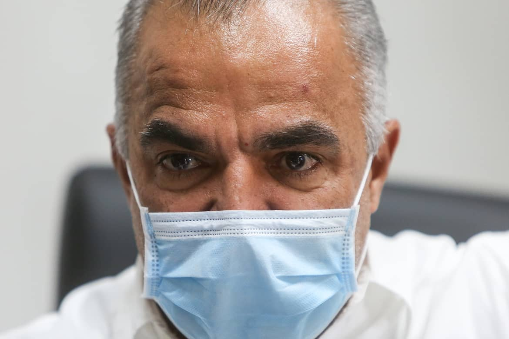
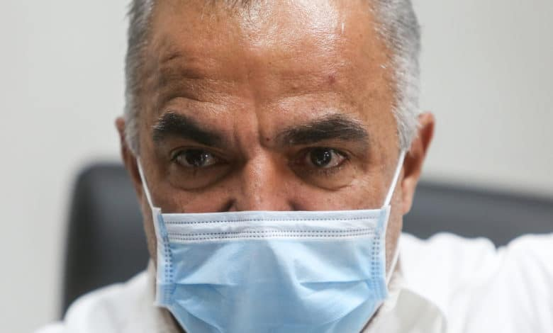

Aclaran que secretario de Salud no ha dado positivo a COVID-19

El secretario de Salud, Lorenzo González Feliciano, no arrojó positivo a COVID-19, según la oficial de prensa de la agencia.
'En el día hoy, Noticentro difundió información que apuntaba a que el secretario del Departamento de Salud, Lorenzo González Feliciano, arrojó positivo a la prueba de COVID-19.Afortunadamente, dicha información es incorrecta y falta a la verdad.Tal como informamos en el día de hoy, el secretario de Salud fue identificado como un contacto directo de una persona que arrojó un resultado positivo a COVID-19.
A raíz de dicha situación, el secretario se mantiene en cuarentena y se realizará la prueba diagnóstica de COVID-19, según establecido en los protocolos del Departamento de Salud.Cabe recalcar que ha seguido todas las recomendaciones establecidas por el personal de investigación de casos y rastreo de contactos y se realizará la prueba, según indican las recomendaciones.En el momento en que tengamos un resultado, se notificará públicamente, de manera responsable, dado que es un funcionario público y trabajador de la primera línea de defensa', manifestó en declaraciones escritas Michelle de la Cruz, portavoz de prensa de Salud.
No obstante, la oficial de prensa no negó en el comunicado si en efecto hay otros 10 funcionarios de la agencia que arrojaron positivo como aseguraron fuentes a la periodista Milly Méndez.
RADIO ISLA realizó múltiples gestiones para confirmar la información, pero al cierre de esta edición no se han recibido respuestas.
Más temprano, González Feliciano informó que estará en cuarentena tras estar en contacto con una persona que arrojó positivo al virus.
'Fui notificado de que soy un contacto directo de una persona que arrojó un resultado positivo a COVID-19.Dicha persona me identificó como un contacto, por lo que el Departamento de Salud y su división de rastreo de contactos, me informó sobre la situación.Dicha situación me obliga a permanecer en cuarentena, por los próximos días', dijo González Feliciano en declaraciones escritas.
Señaló además que 'debido a que la exposición fue en días recientes, y dado a que soy considerado un trabajador de la primera línea de respuesta, próximamente me realizaré la prueba de COVID-19, según dictan los protocolos'.
No obstante, aclaró que se mantendrá atendiendo todos los asuntos del Departamento de Salud de manera remota.
'Reitero que el COVID-19 no discrimina, por lo que todos, de una forma u otra, estamos expuestos al virus.Es por esto que cobra relevancia el uso de mascarillas en todo momento, el distanciamiento físico y el lavado de manos, como herramientas para evitar el contagio.Igualmente, toda persona que estuvo expuesta al virus, debe ser responsable y tomar las medidas establecidas para no propagar el virus.El llamado es a seguir las reglas y no poner la vida de otros en riesgo', añadió
El lunes, la comisionada residente Jenniffer González informó que resultó positivo a COVID-19.Además, varios legisladores están en cuarentena tras ser positivos al virus.
Posted On: 2020-08-24T12:00:00


Content Date: 2020-08-24
Download Date: 2021-05-13
Document ID: L0C04C96E